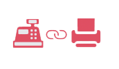

收银系统支付终端
1分钟接入微信、支付宝收银
- 即插即用
- 秒级解码
- 9cm极致尺寸
- 智能营销核心
￥560兼容版￥880加强版
- 兼容收银系统 即插即用
- 适用各种商户 收银环境
 适配各种小票 打印机
适配各种小票 打印机- 直通收银台课县及小票打印机
- 主扫/被扫 均支持
- 1秒钟自助式 支付体验
收银系统支付终端
1分钟接入微信、支付宝收银
适配各种小票 打印机移动支付线下收单，对接各种操作系统，兼容各种收银台。
独有的二维码算法芯片，对接各种操作系统。
支持收银台串口，迷你U口接入，有效助推商超及各种消费场所进行二维码支付。
WiFi上网的移动支付只能硬件，支持微信支付、支付宝支付，一站式布署，即插即用，无需更改原收银系统。 移动支付及卡券核销于一体。
强大的主扫、被扫俩种支付方式适用于商场、超市、餐厅、快餐、烘焙、甜品店、咖啡馆等场景，兼容各种收银台。
支持4GWiFi